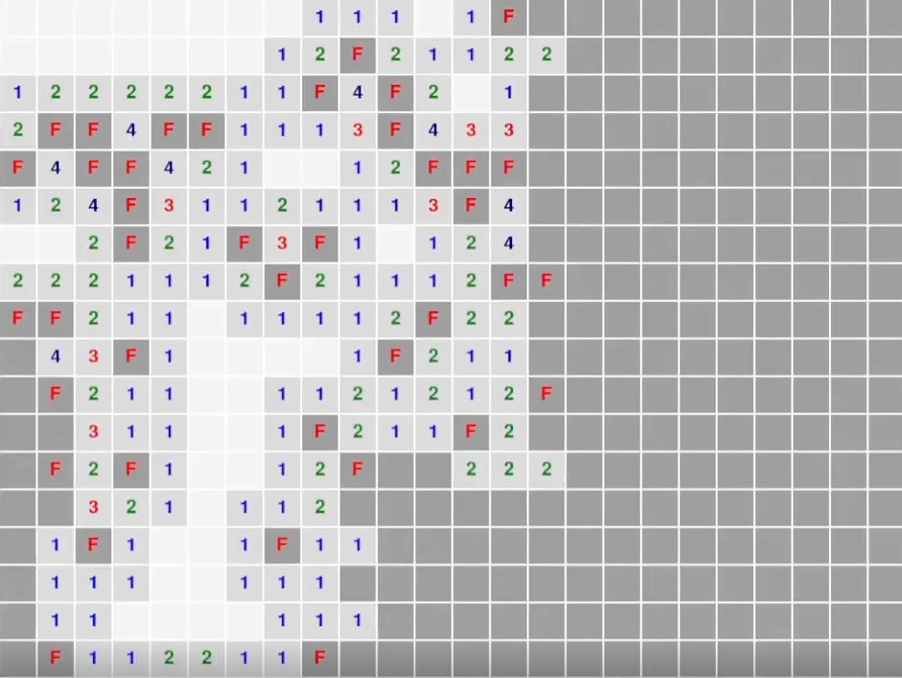

Undergraduate in Computer Science and Games Technology
An AI Minesweeper Solver written in Python using Google OR-Tools.
It uses CSP solving for determining absolute safe moves, and uses Probabilistic Inference to predict safe moves given it cannot reason with CSP.

This project was an assignment for ICT206: Intelligent Systems. The assignment required us to create an AI program in whichever domain we preferred, using any tools we wished.
My original idea was to create a Tetris AI using a Genetic Algorithm, but determined that it would be too large a scope to complete in six weeks, and therefore settled for a Minesweeper AI instead.
This program was written in Python, using PyGame for the application window, and Google's OR-Tools python library for the CSP.
The full write up and repository is available on Github.
The CSP part of the AI was handled by Google OR-Tools' CP-SAT solver. It iterates over every visible tile with a value, and compares the value of that tiles with the number of flags adjacent to it. If there are unknown tiles adjacent to that tile, it will add that and the amount of uncovered bombs surrounding it to the constraints. Then, those constraints are fed into a customised solution collector from the CP-SAT solver to find every possible solution. If, in every possible solution, a tile is never a bomb, that tile is 100% bomb-free and is safe to uncover.
The code that determines if a cell is guaranteed safe/unsafe:
# Grabbing all 100% bomb/non-bomb tiles
solver = cp_model.CpSolver()
safeMoves = set()
bombMoves = set()
# Check every unknown cell and all possible solutions
collector = SolutionCollector(cellVars)
solver.SearchForAllSolutions(model, collector)
for cell in unknowns: # set that stores all tiles with unknown neighbours
vals = [sol[cell] for sol in collector.solutions]
if all(v == 0 for v in vals):
safeMoves.add(cell)
elif all(v == 1 for v in vals):
bombMoves.add(cell)
If the CSP solver cannot find any valid moves...
This part of the AI is for handling uncertainty. As the CSP portion can only handle guaranteed safe moves, any board conditions that do not guarantee a safe move requires the AI to switch to using Probabilistic Inference.
All that it does is calculate the amount of times a tile shows up in the constraints list as a bomb. If it is a bomb, it increases its chances of being an unsafe tile. When all calculations are done, the program will return as a safe move the tile with the lowest probability of being a bomb.
In the off chance there is a tie, it will randomly pick any tile.
The code that determines a cell to pick.
# Using Probabilistic Inference
if probMap:
safestCell = None
lowest = 1.0
for cell, prob in probMap.items():
if prob < lowest:
lowest = prob
safestCell = cell
safeMoves.add(safestCell)
Very simple algorithm that finds the cell with the lowest probability and returns it.
A short demo showcasing the AI solving multiple Expert games.